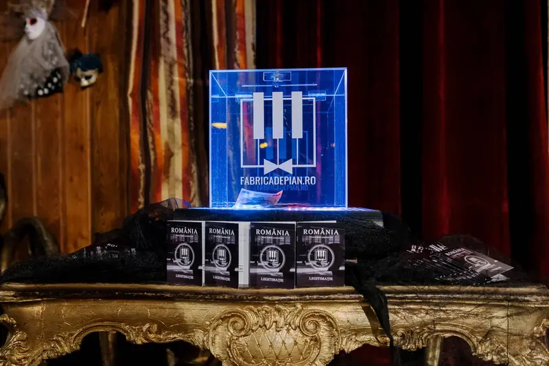
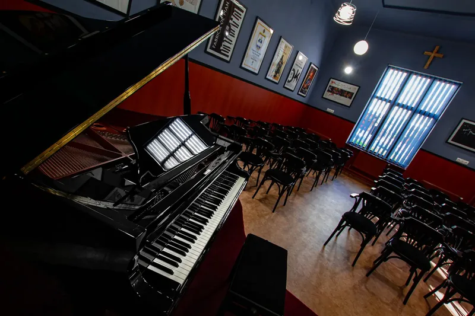

Susține Fabrica de Pian
Am adus pianul, am construit sala, am făcut un studio și, în 2022, am terminat Laboratorul de muzică „Petru Barbăroșie”. Fiecare a fost posibil prin oameni ca tine. Acum ne ajuți să ținem în viață asociația, ca Fabrica de Pian să meargă mai departe pentru tinerii muzicieni ai Văii Jiului.

Direcționează formularul 230
Dacă ai venituri din salarii sau pensii în România, poți direcționa 3,5% din impozitul pe venit către Asociația Fabrica de Pian. Banii nu ies din buzunarul tău, ci din impozitul pe care oricum îl plătești statului.
- Completezi formularul 230 cu datele tale.
- La entitatea beneficiară treci Asociația Fabrica de Pian, C.I.F. 40561657, și IBAN-ul de mai jos.
- Îl depui online, în Spațiul Privat Virtual ANAF, sau ni-l lași semnat la sala 23 a Școlii „I. G. Duca” și îl depunem noi.
Termenul de depunere este, de regulă, 25 mai, pentru veniturile anului anterior.
Donează în contul asociației
Orice sumă contează. Te rugăm să treci la detaliile plății mențiunea „Donație Fabrica de Pian”.
Sponsorizează un vis
Firmele pot susține Fabrica de Pian printr-un contract de sponsorizare, cu posibilitatea deducerii sumei, în limitele legii. Putem asocia numele companiei voastre unui concert, unui instrument sau unui proiect al Secției de Muzică.
Nimic nu este imposibil atunci când visele unor copii de excepție sunt îndeplinite de oamenii mari care au voința de a face acest lucru.

Transparent, de la primul leu
Pianul de concert a fost cumpărat exclusiv din concerte și donații. Sala de concert a fost renovată de la zero, iar studioul audio a fost cumpărat tot din contribuțiile celor care ne sunt mereu alături.
În 2022 am încheiat și Laboratorul de muzică „Petru Barbăroșie”, cu mobilier nou și echipamente de ultimă generație. Ce strângem de acum susține existența asociației și cheltuielile ei curente, ca Fabrica de Pian să rămână alături de elevii Secției de Muzică. Te invităm oricând la un concert în sala Secției de Muzică, să vezi cu ochii tăi ce ai ajutat să construim.
Vezi tot ce am construit →